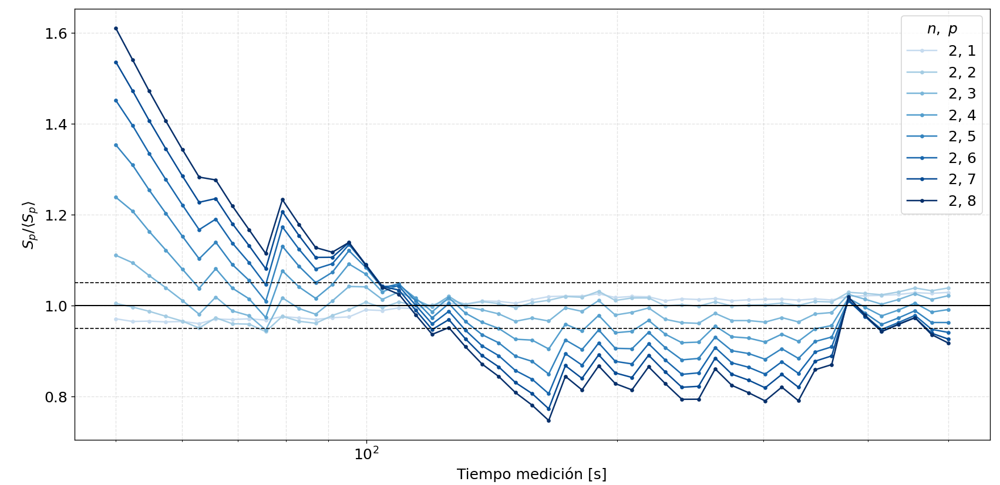
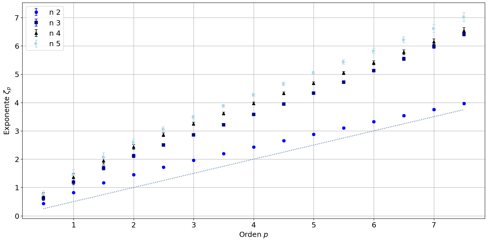
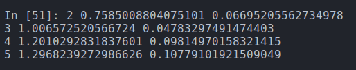

Journal Week 36
Table of Contents
Referencias
2026-09-03
[10:36]
Acá está la convergencia al \(5 \%\) del valor medio para las funciones de estructura en un punto intermedio del rango inercial.

[10:48]
En el rango de 40 a 60 ms (donde debería ser capilar) da lo siguiente:

Con los parámetros del ajuste cuadrático:

Da una pendiente más baja, debería dar la de 2 puntos 0.916 y la de 3 en adelante 1.5.